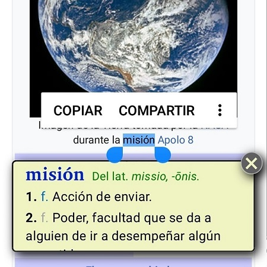
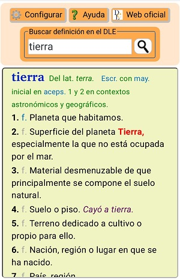

¡Bienvenidos a la extensión no oficial del Diccionario de la lengua española (DLE)!
Cómo funciona
Esta extensión, en su versión para Android, ofrece dos formas de consulta:
1.- Por selección de palabra
Al seleccionar una palabra de una página web, se mostrará un bocadillo con su significado.

Muestra automática de bocadillo
Recordemos que en pantallas táctiles la selección de una palabra se puede conseguir de dos maneras:
Mediante doble toque rápido
Es el equivalente al doble clic de ratón.
Mediante un toque prolongado
En primer lugar aparecerá el menú flotante propio del navegador y, si se mantiene el toque unos milisegundos más, a continuación lo hará el bocadillo.
La extensión permite configurar el tiempo de toque necesario para la activación del bocadillo, así como la activación o no mediante doble toque.
ⓘ En esta página de ayuda está desactivado el funcionamiento de la extensión.
2.- Por cuadro de búsqueda manual
En el menú del navegador, dentro de la opción Extensiones, se encuentra el acceso a la pantalla principal de la extensión. Esta dispone de un cuadro donde escribir la palabra o lema a buscar.

Pantalla con cuadro de búsqueda DLE
Útil también para entradas formadas por varias palabras o para partes de ellas.
DIV reservado para un futuro uso
DIV reservado para un futuro uso
Otras funcionalidades
Simplifica el aspecto de las páginas del tipo https://dle.rae.es/palabra que muestran definiciones de palabras
Redirige los enlaces obsoletos del diccionario, como https://www.rae.es/drae , a la página de consulta vigente https://dle.rae.es